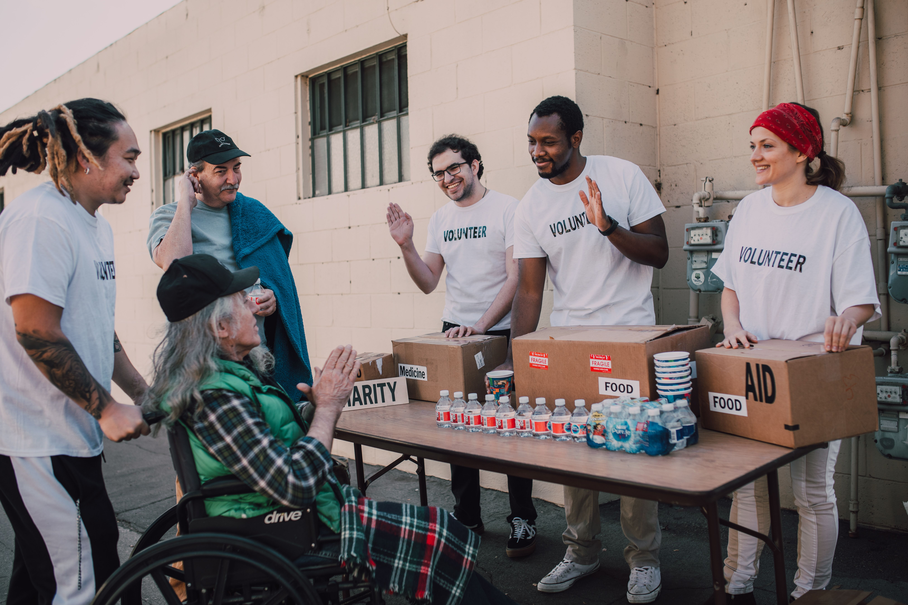

Bem-vindos à nossa ONG!
Nossa missão é ajudar famílias em situação de vulnerabilidade, promovendo solidariedade, esperança e oportunidades para todos.

Sobre nossa ONG
Trabalhamos para construir uma comunidade mais justa por meio de ações solidárias, campanhas de doação e voluntariado.
Entre em contato
E-mail: contato@maosquetransformam.org
Telefone: (12) 99999-9999
Endereço: Ubatuba - SP
Quero ser voluntário